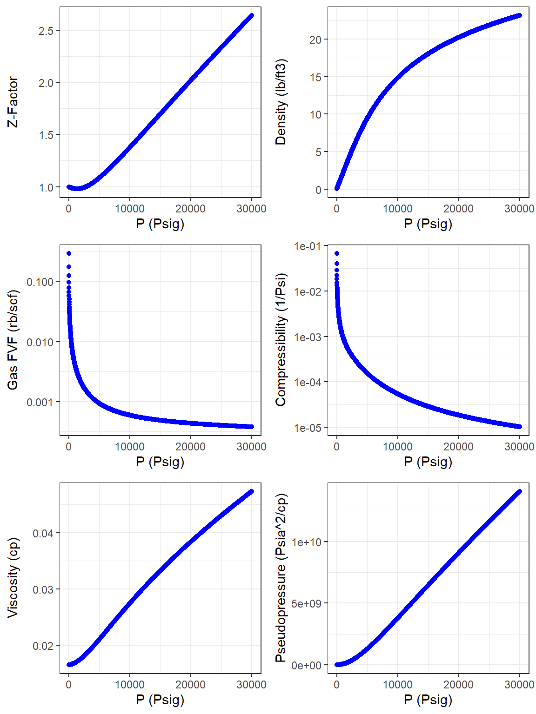
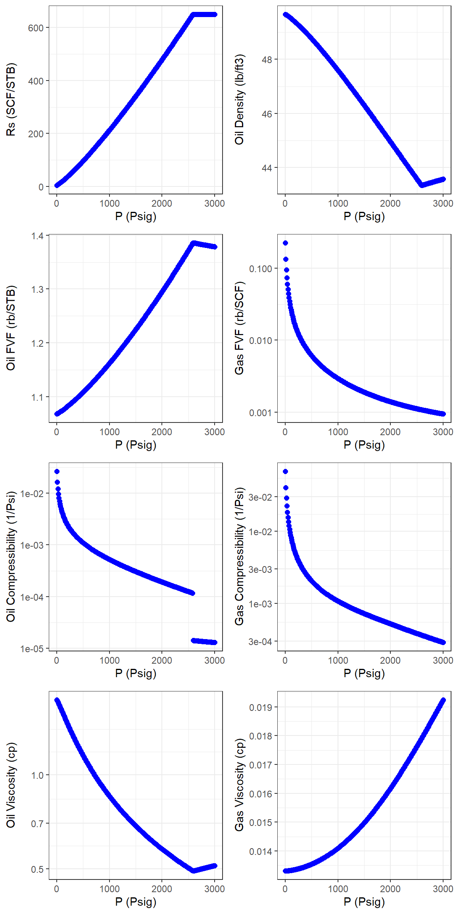
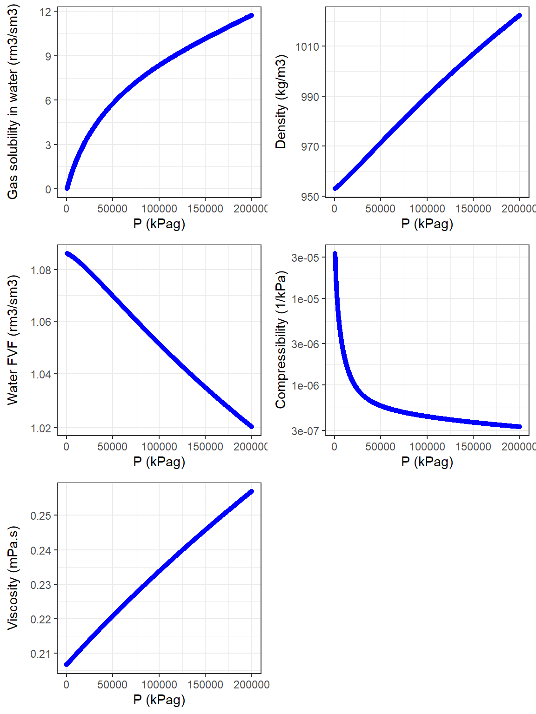

Rpvt.RmdRpvt
Rpvt is a correlation-based PVT (Pressure-Volume-Temperature) package for dry gas, wet gas, black oil, and water samples. It generates PVT properties of hydrocarbons and water samples in a tabular format at a constant temperature from atmospheric pressure up to the pressure of interest. Predictions for gas, oil, and water samples are generated by pvt_gas(), pvt_oil(), and pvt_water() functions, respectively.
pvt_gas() arguments
input_unit: input unit system for parameters, a character string either ‘SI’ or ‘Field’.output_unit: output unit system for properties, a character string either ‘SI’ or ‘Field’.fluid: fluid type, a character string either ‘dry_gas’ or ‘wet_gas’.pvt_model: PVT model, the character string ‘DAK’.visc_model: viscosity model, the character string ‘Sutton’.t: Reservoir temperature, a numeric value either in ‘C’ or ‘F’ depending on the ‘input_unit’.p: Reservoir pressure, a numeric value either in ‘kPag’ or ‘Psig’ depending on the ‘input_unit’.gas_spgr: gas specific gravity (Air = 1.0).nhc_composition: a vector of mole fractions for nitrogen, hydrogen sulfide, and carbon dioxide, respectively.cgr: condensate to gas ratio, a numeric value in ‘m3/m3’ or ‘STB/MMSCF’ depending on the ‘input_unit’.cond_api: condensate API gravity used for wet gas samples. It must be NULL for dry gas mixtures.warning: a charater string either ‘yes’ or ‘no’. It shows warning messages for input parameters outside the range of correlations.pvt_oil() arguments
input_unit: input_unit input unit system for parameters, a character string either ‘SI’ or ‘Field’.output_unit: output_unit output unit system for properties, a character string either ‘SI’ or ‘Field’.fluid: fluid type, the character string ‘black_oil’.pvt_model: PVT model, a character string. ‘Standing’, ‘Vasquez_Beggs’, ‘Farshad_Petrosky’, ‘Al_Marhoun’, and ‘Glaso’ models are currently available.visc_model: viscosity model, a character string. ‘Beggs_Robinson’, and ‘Al_Marhoun’ models are currently available.t: Reservoir temperature, a numeric value either in ‘C’ or ‘F’ depending on the ‘input_unit’.p: Reservoir pressure, a numeric value either in ‘kPag’ or ‘Psig’ depending on the ‘input_unit’.oil_api: API gravity of oil.gas_spgr: gas specific gravity (Air = 1.0).nhc_composition: a vector of mole fractions for nitrogen, hydrogen sulfide, and carbon dioxide, respectively.rsi: initial solution gas oil ratio in ‘m3/m3’ or ‘SCF/STB’ depending on the ‘input_unit’. It is either NULL or a numeric value. If ‘rsi’ is NULL, then a numeric value must be assigned to ‘pb’.pb: bubble point pressure, a numeric value either in ‘kPag’ or ‘Psig’ depending on the ‘input_unit’. it is either NULL or a numeric value. If ‘pb’ is NULL, then a numeric value must be assigned to ‘rsi’.warning: a charater string either ‘yes’ or ‘no’. It shows warning messages for input parameters outside the range of correlations.pvt_water() arguments
input_unit: input_unit input unit system for parameters, a character string either ‘SI’ or ‘Field’.output_unit: output unit system for properties, a character string either ‘SI’ or ‘Field’.fluid: fluid type, the character string ‘water’.pvt_model: PVT model, a character string. ‘Spivey’, ‘Meehan’, and ‘McCain’ models are currently available.visc_model: viscosity model, a character string. ‘Spivey’, ‘Meehan’, and ‘McCain’ models are currently available.t: Reservoir temperature, a numeric value either in ‘C’ or ‘F’ depending on the ‘input_unit’.p: Reservoir pressure, a numeric value either in ‘kPag’ or ‘Psig’ depending on the ‘input_unit’.gas_saturated: a charater string either ‘yes’ or ‘no’.salinity: water salinity in weight percent TDS.warning: a charater string either ‘yes’ or ‘no’. It shows warning messages for input parameters outside the range of correlations.Units for input parametersThe input_unit is either SI or Field. Depending on the input_unit system, the following units are used for the input parameters:
t: “F” in “Field” or “C” in “SI”.p: “Psig” in “Field” or “kPag” in “SI”.cgr: “STB/MMSCF” in “Field” or “m3/m3” in “SI”.rsi: “SCF/STB” in “Field” or “m3/m3” in “SI”.pb: “Psig” in “Field” or “kPag” in “SI”.Gas Correlations
pvt_model: “DAK” correlation (Dranchuk and Abou-Kassem) (Sutton, 2007).visc_model: “Sutton” correlation (Sutton, 2007).Oil Correlations
pvt_model: “Standing”, “Vasquez_Beggs”, “Farshad_Petrosky”, “Al_Marhoun”, or “Glaso” correlations (Al-Marhoun, 1988; Glaso, 1980; Petrosky Jr. & Farshad, 1998; Standing, 1947; Vasquez & Beggs, 1980). “Spivey” correlation is used for estimating the oil compressibility above the bubble point (Spivey, Valko, & McCain, 2007).visc_model: “Beggs_Robinson”, or “Al_Marhoun” correlations (Al-Marhoun, 2004; Beggs & Robinson, 1975).Water Correlations
pvt_model: “Spivey”, “McCain” or “Meehan” correlations (McCain, Jr., Spivey, & Lenn, 2011; McCain Jr., 1991; Meehan, 1980b, 1980a; Spivey, McCain, & North, 2004).visc_model: “Spivey”, “McCain” or “Meehan” correlations (McCain, Jr. et al., 2011; McCain Jr., 1991; Meehan, 1980b, 1980a; Spivey et al., 2004).Gas PVT Examples
library(Rpvt) library(ggplot2) library(magrittr) library(ggpubr) pvt_gas_1 <- pvt_gas(input_unit = "Field", output_unit = "Field", fluid = "dry_gas", pvt_model = "DAK", visc_model = "Sutton", t = 400, p = 30000, gas_spgr = 0.65, nhc_composition = c(0.03,0.012,0.018), cgr = 0, cond_api = NULL, warning = "yes") #> Warning in pvt_gas(input_unit = "Field", output_unit = "Field", fluid = #> "dry_gas", : pressure is greater than dry gas PVT correlation upper limit: 10000 #> psig #> Warning in pvt_gas(input_unit = "Field", output_unit = "Field", fluid = #> "dry_gas", : pressure is greater than gas viscosity correlation upper limit: #> 20000 psig attributes(pvt_gas_1) #> $dim #> [1] 3001 8 #> #> $dimnames #> $dimnames[[1]] #> NULL #> #> $dimnames[[2]] #> [1] "T_(F)" "P_(Psig)" "Z-Factor" #> [4] "Bg_(rb/scf)" "Density_(lb/cuft)" "Cg_(1/Psia)" #> [7] "Viscosity_(cp)" "m(p)_(Psia^2/cp)" #> #> #> $`gas pseudocritical temperature (F)` #> [1] -102.2183 #> #> $`gas pseudocritical pressure (Psia)` #> [1] 648.5108 pvt_gas_1 <- as.data.frame(pvt_gas_1) head(pvt_gas_1,10) #> T_(F) P_(Psig) Z-Factor Bg_(rb/scf) Density_(lb/cuft) Cg_(1/Psia) #> 1 400 0 0.9996026 0.29449758 0.03000184 0.068072651 #> 2 400 10 0.9993343 0.17520145 0.05043034 0.040519143 #> 3 400 20 0.9990678 0.12467204 0.07086968 0.028848352 #> 4 400 30 0.9988031 0.09675307 0.09131977 0.022399782 #> 5 400 40 0.9985402 0.07904301 0.11178051 0.018309117 #> 6 400 50 0.9982790 0.06680793 0.13225179 0.015482979 #> 7 400 60 0.9980196 0.05784892 0.15273351 0.013413498 #> 8 400 70 0.9977620 0.05100557 0.17322557 0.011832661 #> 9 400 80 0.9975062 0.04560763 0.19372786 0.010585663 #> 10 400 90 0.9972522 0.04124093 0.21424029 0.009576844 #> Viscosity_(cp) m(p)_(Psia^2/cp) #> 1 0.01652119 0.00 #> 2 0.01652162 23856.42 #> 3 0.01652218 59833.30 #> 4 0.01652286 107935.97 #> 5 0.01652364 168169.44 #> 6 0.01652452 240538.49 #> 7 0.01652550 325047.64 #> 8 0.01652656 421701.16 #> 9 0.01652770 530503.09 #> 10 0.01652893 651457.25 colnames(pvt_gas_1) <- c("T(F)", "P(Psig)", "Z-FACTOR", "Bg(rb/scf)", "Density(lb/ft3)", "Cg(1/Psi)", "MUg(cp)", "m(p)(Psia^2/cp)") Z_plot <- pvt_gas_1 %>% ggplot(aes(x = `P(Psig)`, y = `Z-FACTOR`)) + geom_point(color = "blue") + xlab(label = "P (Psig)") + ylab(label = "Z-Factor") + theme_bw() Density_plot <- pvt_gas_1 %>% ggplot(aes(x = `P(Psig)`, y = `Density(lb/ft3)`)) + geom_point(color = "blue") + xlab(label = "P (Psig)") + ylab(label = "Density (lb/ft3)") + theme_bw() Bg_plot <- pvt_gas_1 %>% ggplot(aes(x = `P(Psig)`, y = `Bg(rb/scf)`)) + geom_point(color = "blue") + scale_y_log10() + xlab(label = "P (Psig)") + ylab(label = "Gas FVF (rb/scf)") + theme_bw() Cg_plot <- pvt_gas_1 %>% ggplot(aes(x = `P(Psig)`, y = `Cg(1/Psi)`)) + geom_point(color = "blue") + scale_y_log10() + xlab(label = "P (Psig)") + ylab(label = "Compressibility (1/Psi)") + theme_bw() MUg_plot <- pvt_gas_1 %>% ggplot(aes(x = `P(Psig)`, y = `MUg(cp)`)) + geom_point(color = "blue") + xlab(label = "P (Psig)") + ylab(label = "Viscosity (cp)") + theme_bw() mp_plot <- pvt_gas_1 %>% ggplot(aes(x = `P(Psig)`, y = `m(p)(Psia^2/cp)`)) + geom_point(color = "blue") + xlab(label = "P (Psig)") + ylab(label = "Pseudopressure (Psia^2/cp)") + theme_bw() gas_pvt_plots <- ggarrange(Z_plot, Density_plot, Bg_plot, Cg_plot, MUg_plot, mp_plot, ncol = 2, nrow = 3, align = "v") gas_pvt_plots

pvt_gas_2 <- pvt_gas(input_unit = "Field", output_unit = "SI", fluid = "wet_gas", pvt_model = "DAK", visc_model = "Sutton", t = 300, p = 5000, gas_spgr = 0.75, nhc_composition = c(0.05,0.01,0.04), cgr = 5, cond_api = 42.3, warning = "no") tail(as.data.frame(pvt_gas_2), 10) #> T_(C) P_(kPag) Z-Factor Bg_(rm3/sm3) Density_(kg/m3) Cg_(1/kPaa) #> 492 148.8889 33853.26 1.038327 0.01292178 72.48579 2.130071e-05 #> 493 148.8889 33922.21 1.038911 0.01290285 72.59215 2.123161e-05 #> 494 148.8889 33991.15 1.039496 0.01288400 72.69832 2.116284e-05 #> 495 148.8889 34060.10 1.040082 0.01286525 72.80430 2.109439e-05 #> 496 148.8889 34129.05 1.040669 0.01284658 72.91010 2.102627e-05 #> 497 148.8889 34198.00 1.041257 0.01282800 73.01570 2.095847e-05 #> 498 148.8889 34266.94 1.041846 0.01280951 73.12112 2.089099e-05 #> 499 148.8889 34335.89 1.042436 0.01279110 73.22635 2.082383e-05 #> 500 148.8889 34404.84 1.043027 0.01277278 73.33139 2.075699e-05 #> 501 148.8889 34473.79 1.043619 0.01275454 73.43624 2.069046e-05 #> Viscosity_(mPa.s) m(p)_(MPaa^2/mPa.s) #> 492 0.02369521 59798.72 #> 493 0.02371929 59989.07 #> 494 0.02374337 60179.51 #> 495 0.02376746 60370.03 #> 496 0.02379154 60560.63 #> 497 0.02381564 60751.32 #> 498 0.02383973 60942.09 #> 499 0.02386383 61132.94 #> 500 0.02388794 61323.87 #> 501 0.02391204 61514.88
Oil PVT Examples
library(Rpvt) library(ggplot2) library(magrittr) library(ggpubr) pvt_oil_1 <- pvt_oil(input_unit = "Field", output_unit = "Field", fluid = "black_oil", pvt_model = "Standing", visc_model = "Beggs_Robinson", t = 200, p = 3000, oil_api = 35, gas_spgr = 0.8, nhc_composition = c(0.05,0.02,0.04), rsi = 650, pb = NULL, warning = "yes") #> Warning in pvt_oil(input_unit = "Field", output_unit = "Field", fluid = #> "black_oil", : H2S composition is greater than gas viscosity correlation upper #> limit: 0.017 mol fraction attributes(pvt_oil_1) #> $dim #> [1] 301 13 #> #> $dimnames #> $dimnames[[1]] #> NULL #> #> $dimnames[[2]] #> [1] "T_(F)" "P_(Psig)" "Rso_(scf/stb)" #> [4] "Bo_(rb/stb)" "Oil_Density_(lb/ft3)" "Co_(1/Psia)" #> [7] "Oil_Viscosity_(cp)" "Z-Factor" "Bg_(rb/scf)" #> [10] "Gas_Density_(lb/ft3)" "Cg_(1/Psia)" "Gas_Viscosity_(cp)" #> [13] "m(p)_(Psia^2/cp)" #> #> #> $`gas pseudocritical temperature (F)` #> [1] -61.59983 #> #> $`gas pseudocritical pressure (Psia)` #> [1] 647.0921 pvt_oil_1 <- as.data.frame(pvt_oil_1) tail(pvt_oil_1, 10) #> T_(F) P_(Psig) Rso_(scf/stb) Bo_(rb/stb) Oil_Density_(lb/ft3) Co_(1/Psia) #> 292 200 2910 650 1.380185 43.52833 1.319029e-05 #> 293 200 2920 650 1.380014 43.53371 1.316513e-05 #> 294 200 2930 650 1.379844 43.53907 1.314019e-05 #> 295 200 2940 650 1.379675 43.54441 1.311547e-05 #> 296 200 2950 650 1.379506 43.54974 1.309097e-05 #> 297 200 2960 650 1.379338 43.55504 1.306667e-05 #> 298 200 2970 650 1.379171 43.56034 1.304258e-05 #> 299 200 2980 650 1.379004 43.56561 1.301870e-05 #> 300 200 2990 650 1.378837 43.57087 1.299502e-05 #> 301 200 3000 650 1.378671 43.57611 1.297154e-05 #> Oil_Viscosity_(cp) Z-Factor Bg_(rb/scf) Gas_Density_(lb/ft3) Cg_(1/Psia) #> 292 0.5075536 0.8571989 0.0009737542 11.16752 0.0003017984 #> 293 0.5080544 0.8575451 0.0009708281 11.20118 0.0003001107 #> 294 0.5085569 0.8578959 0.0009679270 11.23475 0.0002984348 #> 295 0.5090612 0.8582513 0.0009650507 11.26824 0.0002967708 #> 296 0.5095672 0.8586112 0.0009621989 11.30164 0.0002951185 #> 297 0.5100750 0.8589757 0.0009593714 11.33495 0.0002934779 #> 298 0.5105844 0.8593446 0.0009565678 11.36817 0.0002918488 #> 299 0.5110956 0.8597181 0.0009537878 11.40130 0.0002902311 #> 300 0.5116085 0.8600959 0.0009510313 11.43435 0.0002886249 #> 301 0.5121231 0.8604782 0.0009482979 11.46731 0.0002870300 #> Gas_Viscosity_(cp) m(p)_(Psia^2/cp) #> 292 0.01894741 613123202 #> 293 0.01898046 616726950 #> 294 0.01901354 620335238 #> 295 0.01904666 623948017 #> 296 0.01907980 627565235 #> 297 0.01911298 631186844 #> 298 0.01914620 634812793 #> 299 0.01917944 638443035 #> 300 0.01921272 642077519 #> 301 0.01924602 645716199 Rs_plot <- pvt_oil_1 %>% ggplot(aes(x = `P_(Psig)`, y = `Rso_(scf/stb)`)) + geom_point(color = "blue", size = 2) + xlab(label = "P (Psig)") + ylab(label = "Rs (SCF/STB)") + theme_bw() Bo_plot <- pvt_oil_1 %>% ggplot(aes(x = `P_(Psig)`, y = `Bo_(rb/stb)`)) + geom_point(color = "blue", size = 2) + xlab(label = "P (Psig)") + ylab(label = "Oil FVF (rb/STB)") + theme_bw() RHOo_plot <- pvt_oil_1 %>% ggplot(aes(x = `P_(Psig)`, y = `Oil_Density_(lb/ft3)`)) + geom_point(color = "blue", size = 2) + xlab(label = "P (Psig)") + ylab(label = "Oil Density (lb/ft3)") + theme_bw() Co_plot <- pvt_oil_1 %>% ggplot(aes(x = `P_(Psig)`, y = `Co_(1/Psia)`)) + geom_point(color = "blue", size = 2) + scale_y_log10() + xlab(label = "P (Psig)") + ylab(label = "Oil Compressibility (1/Psi)") + theme_bw() MUo_plot <- pvt_oil_1 %>% ggplot(aes(x = `P_(Psig)`, y = `Oil_Viscosity_(cp)`)) + geom_point(color = "blue", size = 2) + scale_y_log10() + xlab(label = "P (Psig)") + ylab(label = "Oil Viscosity (cp)") + theme_bw() Bg_plot <- pvt_oil_1 %>% ggplot(aes(x = `P_(Psig)`, y = `Bg_(rb/scf)`)) + geom_point(color = "blue", size = 2) + scale_y_log10() + xlab(label = "P (Psig)") + ylab(label = "Gas FVF (rb/SCF)") + theme_bw() Cg_plot <- pvt_oil_1 %>% ggplot(aes(x = `P_(Psig)`, y = `Cg_(1/Psia)`)) + geom_point(color = "blue", size = 2) + scale_y_log10() + xlab(label = "P (Psig)") + ylab(label = "Gas Compressibility (1/Psi)") + theme_bw() MUg_plot <- pvt_oil_1 %>% ggplot(aes(x = `P_(Psig)`, y = `Gas_Viscosity_(cp)`)) + geom_point(color = "blue", size = 2) + xlab(label = "P (Psig)") + ylab(label = "Gas Viscosity (cp)") + theme_bw() oil_pvt_plots <- ggarrange(Rs_plot, RHOo_plot, Bo_plot, Bg_plot, Co_plot, Cg_plot, MUo_plot, MUg_plot, ncol = 2, nrow = 4, align = "v") oil_pvt_plots

pvt_oil_2 <- pvt_oil(input_unit = "SI", output_unit = "SI", fluid = "black_oil", pvt_model = "Vasquez_Beggs", visc_model = "Al_Marhoun", t = 100, p = 20000, oil_api = 40, gas_spgr = 0.75, nhc_composition = c(0.05,0.02,0.04), rsi = NULL, pb = 13000, warning = "yes") #> Warning in pvt_oil(input_unit = "SI", output_unit = "SI", fluid = "black_oil", : #> H2S composition is greater than gas viscosity correlation upper limit: 0.017 mol #> fraction head(as.data.frame(pvt_oil_2), 10) #> T_(C) P_(kPag) Rso_(rm3/sm3) Bo_(rm3/sm3) Oil_Density_(kg/m3) Co_(1/kPaa) #> 1 100 0.00000 0.2401985 1.089818 756.5732 0.0033255930 #> 2 100 68.94757 0.4447876 1.090367 756.3642 0.0021745619 #> 3 100 137.89515 0.6659115 1.090961 756.1386 0.0016446979 #> 4 100 206.84272 0.8994433 1.091588 755.9005 0.0013347696 #> 5 100 275.79029 1.1430314 1.092242 755.6525 0.0011293957 #> 6 100 344.73786 1.3951355 1.092919 755.3962 0.0009823799 #> 7 100 413.68544 1.6546602 1.093616 755.1326 0.0008714483 #> 8 100 482.63301 1.9207823 1.094330 754.8627 0.0007844784 #> 9 100 551.58058 2.1928581 1.095060 754.5871 0.0007142814 #> 10 100 620.52816 2.4703694 1.095805 754.3064 0.0006563117 #> Oil_Viscosity_(mPa.s) Z-Factor Bg_(rm3/sm3) Gas_Density_(kg/m3) Cg_(1/kPaa) #> 1 0.7274220 0.9986855 1.2906979 0.7103805 0.009882170 #> 2 0.7241780 0.9977932 0.7673772 1.1948317 0.005885882 #> 3 0.7206860 0.9969027 0.5457181 1.6801470 0.004193186 #> 4 0.7170347 0.9960140 0.4232449 2.1663262 0.003257910 #> 5 0.7132757 0.9951271 0.3455557 2.6533689 0.002664619 #> 6 0.7094434 0.9942421 0.2918836 3.1412746 0.002254731 #> 7 0.7055623 0.9933590 0.2525829 3.6300428 0.001954588 #> 8 0.7016509 0.9924778 0.2225630 4.1196731 0.001725315 #> 9 0.6977233 0.9915984 0.1988837 4.6101647 0.001544462 #> 10 0.6937909 0.9907210 0.1797282 5.1015171 0.001398153 #> Gas_Viscosity_(mPa.s) m(p)_(MPaa^2/mPa.s) #> 1 0.01370328 0.000000 #> 2 0.01370404 1.369056 #> 3 0.01370503 3.434840 #> 4 0.01370622 6.198464 #> 5 0.01370760 9.661007 #> 6 0.01370915 13.823523 #> 7 0.01371087 18.687043 #> 8 0.01371275 24.252573 #> 9 0.01371478 30.521094 #> 10 0.01371695 37.493567
pvt_oil_3 <- pvt_oil(input_unit = "Field", output_unit = "SI", fluid = "black_oil", pvt_model = "Farshad_Petrosky", visc_model = "Al_Marhoun", t = 260, p = 4000, oil_api = 38, gas_spgr = 0.68, nhc_composition = c(0.03,0.07,0.08), rsi = NULL, pb = 2500, warning = "yes") #> Warning in pvt_oil(input_unit = "Field", output_unit = "SI", fluid = #> "black_oil", : H2S composition is greater than gas viscosity correlation upper #> limit: 0.017 mol fraction head(as.data.frame(pvt_oil_3), 10) #> T_(C) P_(kPag) Rso_(rm3/sm3) Bo_(rm3/sm3) Oil_Density_(kg/m3) #> 1 126.6667 0.00000 12.46911 1.094699 771.3572 #> 2 126.6667 68.94757 12.62313 1.095295 771.0545 #> 3 126.6667 137.89515 12.77794 1.095892 770.7519 #> 4 126.6667 206.84272 12.93355 1.096491 770.4491 #> 5 126.6667 275.79029 13.08996 1.097091 770.1464 #> 6 126.6667 344.73786 13.24716 1.097692 769.8436 #> 7 126.6667 413.68544 13.40515 1.098295 769.5407 #> 8 126.6667 482.63301 13.56393 1.098899 769.2379 #> 9 126.6667 551.58058 13.72350 1.099505 768.9350 #> 10 126.6667 620.52816 13.88386 1.100112 768.6320 #> Co_(1/kPaa) Oil_Viscosity_(mPa.s) Z-Factor Bg_(rm3/sm3) #> 1 0.0028083871 0.4838329 0.9992613 1.3837332 #> 2 0.0016749541 0.4832363 0.9987608 0.8230142 #> 3 0.0011948412 0.4826397 0.9982621 0.5855144 #> 4 0.0009295394 0.4820430 0.9977651 0.4542889 #> 5 0.0007612280 0.4814463 0.9972700 0.3710476 #> 6 0.0006449318 0.4808496 0.9967766 0.3135399 #> 7 0.0005597603 0.4802529 0.9962850 0.2714305 #> 8 0.0004946890 0.4796564 0.9957953 0.2392652 #> 9 0.0004433500 0.4790600 0.9953074 0.2138937 #> 10 0.0004018085 0.4784638 0.9948213 0.1933693 #> Gas_Density_(kg/m3) Cg_(1/kPaa) Gas_Viscosity_(mPa.s) m(p)_(MPaa^2/mPa.s) #> 1 0.6007737 0.009876476 0.01545179 0.000000 #> 2 1.0100805 0.005880180 0.01545242 1.213147 #> 3 1.4197951 0.004187477 0.01545324 3.043021 #> 4 1.8299161 0.003252193 0.01545423 5.490149 #> 5 2.2404418 0.002658895 0.01545537 8.555038 #> 6 2.6513706 0.002249000 0.01545665 12.238176 #> 7 3.0627008 0.001948850 0.01545807 16.540033 #> 8 3.4744308 0.001719571 0.01545962 21.461063 #> 9 3.8865588 0.001538711 0.01546129 27.001701 #> 10 4.2990832 0.001392396 0.01546308 33.162369
Water PVT Examples
library(Rpvt) library(ggplot2) library(magrittr) library(ggpubr) pvt_water_1 <- as.data.frame(pvt_water(input_unit = "SI", output_unit = "SI", fluid = "water", pvt_model = "Spivey", visc_model = "Spivey", t = 150, p = 200000, salinity = 5, gas_saturated = "yes", warning = "yes")) #> Warning in pvt_water(input_unit = "SI", output_unit = "SI", fluid = "water", : #> The pressure lower limit in 'Spivey' correlation is 115 psig (790 kPag) #> Warning in pvt_water(input_unit = "SI", output_unit = "SI", fluid = "water", : #> pressure is greater than PVT correlation upper limit: 29000 psig head(pvt_water_1,10) #> T_(C) P_(kPag) Rsw_(rm3/sm3) Bw_(rm3/sm3) Density_(kg/m3) Cw_(1/kPaa) #> 1 150 0.00000 NaN NaN NaN NaN #> 2 150 68.94757 NaN NaN NaN NaN #> 3 150 137.89515 NaN NaN NaN NaN #> 4 150 206.84272 NaN NaN NaN NaN #> 5 150 275.79029 NaN NaN NaN NaN #> 6 150 344.73786 NaN NaN NaN NaN #> 7 150 413.68544 0.001877106 1.086347 952.9482 2.160339e-05 #> 8 150 482.63301 0.009433052 1.086319 952.9771 3.105915e-05 #> 9 150 551.58058 0.019506617 1.086296 953.0035 3.324147e-05 #> 10 150 620.52816 0.031017232 1.086276 953.0285 3.317271e-05 #> Viscosity_(mPa.s) #> 1 0.2066466 #> 2 0.2066671 #> 3 0.2066877 #> 4 0.2067082 #> 5 0.2067288 #> 6 0.2067493 #> 7 0.2067698 #> 8 0.2067904 #> 9 0.2068109 #> 10 0.2068314 colnames(pvt_water_1) <- c("T(C)", "P(kPag)", "Rsw(rm3/sm3)", "Bw(rm3/sm3)", "Density(kg/m3)", "Cw(1/kPa)", "MUw(mPa.s)") Solubility_plot <- pvt_water_1 %>% ggplot(aes(x = `P(kPag)`, y = `Rsw(rm3/sm3)`)) + geom_point(color = "blue") + xlab(label = "P (kPag)") + ylab(label = "Gas solubility in water (rm3/sm3)") + theme_bw() Density_plot <- pvt_water_1 %>% ggplot(aes(x = `P(kPag)`, y = `Density(kg/m3)`)) + geom_point(color = "blue") + xlab(label = "P (kPag)") + ylab(label = "Density (kg/m3)") + theme_bw() Bw_plot <- pvt_water_1 %>% ggplot(aes(x = `P(kPag)`, y = `Bw(rm3/sm3)`)) + geom_point(color = "blue") + scale_y_log10() + xlab(label = "P (kPag)") + ylab(label = "Water FVF (rm3/sm3)") + theme_bw() Cw_plot <- pvt_water_1 %>% ggplot(aes(x = `P(kPag)`, y = `Cw(1/kPa)`)) + geom_point(color = "blue") + scale_y_log10() + xlab(label = "P (kPag)") + ylab(label = "Compressibility (1/kPa)") + theme_bw() MUw_plot <- pvt_water_1 %>% ggplot(aes(x = `P(kPag)`, y = `MUw(mPa.s)`)) + geom_point(color = "blue") + xlab(label = "P (kPag)") + ylab(label = "Viscosity (mPa.s)") + theme_bw() water_pvt_plots <- ggarrange(Solubility_plot, Density_plot, Bw_plot, Cw_plot, MUw_plot, ncol = 2, nrow = 3, align = "v") #> Warning: Removed 6 rows containing missing values (geom_point). #> Warning: Removed 6 rows containing missing values (geom_point). #> Warning: Removed 6 rows containing missing values (geom_point). #> Warning: Removed 6 rows containing missing values (geom_point). water_pvt_plots

pvt_water_2 <- as.data.frame(pvt_water(input_unit = "Field", output_unit = "SI", fluid = "water", pvt_model = "McCain", visc_model = "McCain", t = 200, p = 4000, salinity = 15, gas_saturated = "yes", warning = "yes")) head(pvt_water_2, 10) #> T_(C) P_(kPag) Rsw_(rm3/sm3) Bw_(rm3/sm3) Density_(kg/m3) Cw_(1/kPaa) #> 1 93.33333 0.00000 0.1807648 1.038692 1068.840 8.485921e-05 #> 2 93.33333 68.94757 0.1855351 1.038684 1068.848 5.056644e-05 #> 3 93.33333 137.89515 0.1903012 1.038676 1068.856 3.604131e-05 #> 4 93.33333 206.84272 0.1950633 1.038668 1068.864 2.801577e-05 #> 5 93.33333 275.79029 0.1998212 1.038660 1068.872 2.292487e-05 #> 6 93.33333 344.73786 0.2045751 1.038652 1068.881 1.940781e-05 #> 7 93.33333 413.68544 0.2093249 1.038644 1068.889 1.683249e-05 #> 8 93.33333 482.63301 0.2140705 1.038635 1068.898 1.486533e-05 #> 9 93.33333 551.58058 0.2188121 1.038627 1068.906 1.331367e-05 #> 10 93.33333 620.52816 0.2235496 1.038619 1068.915 1.205845e-05 #> Viscosity_(mPa.s) #> 1 0.4528099 #> 2 0.4529929 #> 3 0.4531762 #> 4 0.4533598 #> 5 0.4535436 #> 6 0.4537278 #> 7 0.4539122 #> 8 0.4540969 #> 9 0.4542819 #> 10 0.4544672
pvt_water_3 <- pvt_water(input_unit = "Field", output_unit = "Field", fluid = "water", pvt_model = "Meehan", visc_model = "Meehan", t = 300, p = 3000, salinity = 10, gas_saturated = "no", warning = "yes") #> Warning in pvt_water(input_unit = "Field", output_unit = "Field", fluid = #> "water", : temperature is greater than PVT correlation upper limit: 250 F tail(as.data.frame(pvt_water_3), 10) #> T_(F) P_(Psig) Rsw_(scf/stb) Bw_(rb/stb) Density_(lb/ft3) Cw_(1/Psia) #> 292 300 2910 0 1.072288 62.40311 3.152895e-06 #> 293 300 2920 0 1.072257 62.40493 3.152346e-06 #> 294 300 2930 0 1.072225 62.40676 3.151797e-06 #> 295 300 2940 0 1.072194 62.40858 3.151249e-06 #> 296 300 2950 0 1.072163 62.41040 3.150700e-06 #> 297 300 2960 0 1.072131 62.41223 3.150151e-06 #> 298 300 2970 0 1.072100 62.41405 3.149602e-06 #> 299 300 2980 0 1.072069 62.41587 3.149054e-06 #> 300 300 2990 0 1.072038 62.41768 3.148505e-06 #> 301 300 3000 0 1.072006 62.41950 3.147956e-06 #> Viscosity_(cp) #> 292 0.2781652 #> 293 0.2781799 #> 294 0.2781947 #> 295 0.2782095 #> 296 0.2782244 #> 297 0.2782393 #> 298 0.2782542 #> 299 0.2782693 #> 300 0.2782843 #> 301 0.2782994
References
Al-Marhoun, M. A. (1988). PVT Correlations for Middle East Crude Oils. Journal of Petroleum Technology, 40(05), 650–666. https://doi.org/10.2118/13718-PA
Al-Marhoun, M. A. (2004). Evaluation of empirically derived PVT properties for Middle East crude oils. Journal of Petroleum Science and Engineering, 42(2), 209–221.
Beggs, H. D., & Robinson, J. R. (1975). Estimating the Viscosity of Crude Oil Systems. Journal of Petroleum Technology, 27(09), 1140–1141. https://doi.org/10.2118/5434-PA
Glaso, O. (1980). Generalized Pressure-Volume-Temperature Correlations. Journal of Petroleum Technology, 32(05), 785–795. https://doi.org/10.2118/8016-PA
McCain, Jr., W. D., Spivey, J. P., & Lenn, C. P. (2011). Petroleum Reservoir Fluid Property Correlations (p. 219). PennWell Corporation.
McCain Jr., W. D. (1991). Reservoir-Fluid Property Correlations-State of the Art (includes associated papers 23583 and 23594 ). SPE Reservoir Engineering, 6(02), 266–272. https://doi.org/10.2118/18571-PA
Meehan, D. N. (1980a). A correlation for water compressibility. Petroleum Engineer, 56, 125–126.
Meehan, D. N. (1980b). Estimating water viscosity at reservoir conditions. Petroleum Engineer, 35, 117–118.
Petrosky Jr., G. E., & Farshad, F. (1998). Pressure-Volume-Temperature Correlations for Gulf of Mexico Crude Oils. SPE Reservoir Evaluation & Engineering, 1(05), 416–420. https://doi.org/10.2118/51395-PA
Spivey, J. P., McCain, W. D., & North, R. (2004). Estimating density, formation volume factor, compressibility, methane solubility, and viscosity for oilfield brines at temperatures from 0 to 275° C, pressures to 200 MPa, and salinities to 5.7 mole/kg. Journal of Canadian Petroleum Technology, 43(7), 52–61. https://doi.org/10.2118/04-07-05
Spivey, J. P., Valko, P. P., & McCain, W. D. (2007). Applications of the Coefficient of Isothermal Compressibility to Various Reservoir Situations With New Correlations for Each Situation. SPE Reservoir Evaluation & Engineering, 10(01), 43–49. https://doi.org/10.2118/96415-PA
Standing, M. B. (1947). A Pressure-Volume-Temperature Correlation For Mixtures Of California Oils And Gases. New York, New York: American Petroleum Institute.
Sutton, R. P. (2007). Fundamental PVT Calculations for Associated and Gas/Condensate Natural-Gas Systems. SPE Reservoir Evaluation & Engineering, 10(03), 270–284. https://doi.org/10.2118/97099-PA
Vasquez, M., & Beggs, H. D. (1980). Correlations for Fluid Physical Property Prediction. Journal of Petroleum Technology, 32(06), 968–970. https://doi.org/10.2118/6719-PA